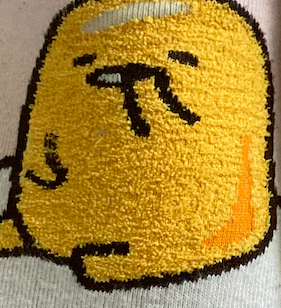
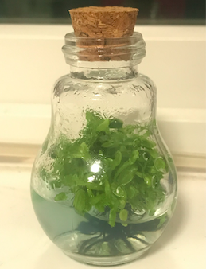

Jessica Lo, 2021
This image is a pair of socks I owned that I really love.
The character printed on the socks is called Gudetama -
a Japanese character published by Sanrio, which is the
same company under which Hello Kitty was produced.
The interesting aspect of this image is the extremely
close zoom in. Without careful observation to see
the fabric and texture, I believe it would be difficult
to tell that this is a zoomed in picture of a pair of socks.
Anyone who doesn’t know about Gudetama would also not be aware
of the character. Although not obviously seen from this image,
I really cherish this pair of socks because they were a gift
from a friend who knows my obsession with Gudetama.
It’s not so much the socks themselves, but the heart of that
friend that remembered what I like and gave me these socks
that really made this item significant to me.

Jean Pagaduan, 2021
The image depicts a Venus flytrap planted in a bottle with water.
The idea is very interesting because I’ve never seen this type of plant
in water and in a closed container.
My first question was: how does the plant trap insects while it’s inside
that closed space?
The next question I had was: why is it in the water instead of being potted?
Regardless of my concern for the plant’s well-being to survive in water,
I do see that it is doing well. I have no doubt that the owner is surely
taking good care of the plant and knowingly putting the plant in this condition.
I still find it pretty mysterious that the venus flytrap is being grown
in the bottle.
10
Intriguing Photographs
to Teach Close Reading
and Visual
Thinking Skills
The article “10 Intriguing Photographs to Teach Close Reading and
Visual Thinking Skills” by Michael Gonchar outlines some examples of
how successful visual work can catch readers attention to and
interact with the readings more closely.
Nurture Visual is a website in which I see this closely reading would happen.
Upon visiting the site, I soon stopped scrolling because an
interactive illustration on the left hand side caught my attention.
I spend a couple minutes hovering around the different sections to
read and interpret the different visual elements the web designers include.
Without leaving where I initially entered on the site, I already have a pretty
good understanding of what the site would be about. This visual alone slows me down
because it sparks my interest to understand what each visual element means.
As I (finally) start scrolling, I am encouraged to do so very slowly because
each panel has a different animation. The page automatically scrolls for me
after a certain time frame as well, so I was encouraged to just sit back, relax,
and enjoy reading the text.
For these reasons, I would say that this website is one that I would agree to
have successfully accomplished the visual thinking goal Gonchar describes in his article.
Best
Practices for
Modals /
Overlays /
Dialog Windows
I read “Best Practices for Modals / Overlays / Dialog Windows”
by Naema Baskanderi and learned many details that I would otherwise
not pay attention to if I were to create a modal.
One of the most important points I heard is to
not make the buttons on the modal confusing.
Naema gave the example on how if a modal is meant for
canceling an order, a “cancel” button on the modal can be
confusing as the user wouldn’t know whether the button will
actually cancel their order or cancel the process.
It’s funny to hear Naema point out these mistakes a web designer can make.
I can recall how I, as a user, had also experienced something similar
that frustrated me.
The article by Naema made me realize that there are
so many things that could make a modal useful but also unhelpful.
april 14, 2021
Best
Practices
for
form
design
I read the article “Best practices for form design”
by Salim Ansari and learned many new things about
what design pattern practices to make an application
more user-friendly.
The most important thing to note is that
users can get lost fairly easily
if the application is confusing or complicated to navigate.
To keep users’ attention, Ansari gave many good practices on
how to minimize the work users have to do and provide as much
clarity in terms of what the users are expected to do.
Doing so, usability, accessibility, and readability would improve
and users are more likely to complete the form they are given!
I personally love the typeform web form format.
An example can be found here,
which is the Lovelace Hack sign up form.
The form looks simple with step by step fields to fill in.
It also lets user knows how many questions are left and
keyboard shortcuts to make typing easier.